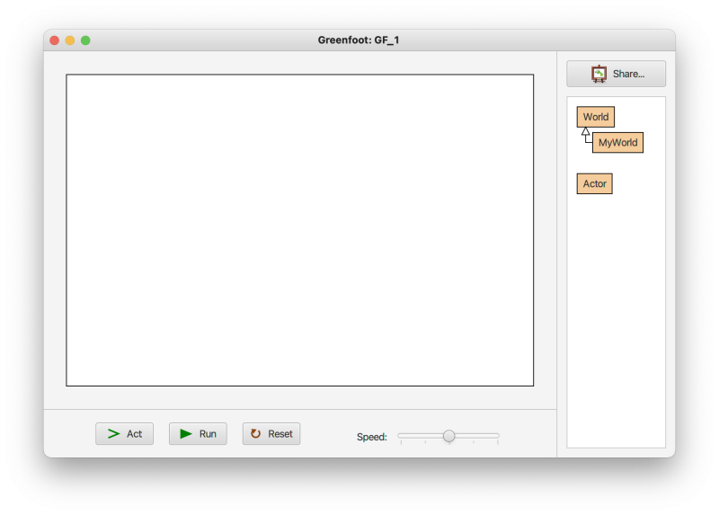

Greenfoot で用いられるプロジェクトの事を「シナリオ」と呼びます。
シナリオは Senario メニュー → New Java Senario で新規作成することが出来ます。
※ New Stride Senario の方を選ばないよう注意して下さい
名前を付けてシナリオを新規作成すると 図1 のような画面が表示されます。
画面左側の大きいエリアのことを「ワールド」、
右側の World classes と書いてあるエリアの事を「クラス画面」、
下側のボタンが置いてある部分を「実行コントロール」と言います。
図1. シナリオ新規作成直後の画面
さて右側のクラス画面には World クラスとそれを継承した MyWorld クラスが表示されています。
この MyWorld クラスの様な World クラスのサブクラスは複数作成することが出来て、それぞれタイトル画面やゲーム画面、ゲームオーバー画面などの各場面に相当しています。
よって複数のサブクラスを用意することで、プログラマはゲーム中の適切なタイミングで各場面を切り替えることが可能になっています。
新しいサブクラスは World クラスの上で右クリックしてメニューを表示し、New Subclass を選択すると作成できます。
また左側のワールドには既に MyWorld オブジェクトが表示されているのですが、デフォルトでは背景画像が指定されていないので白いままになっています。
背景画像を割り当てるには MyWorld クラスの上で右クリックしてメニューを表示し、Set Image を選択すると背景画像を選択出来ます。
※ 背景画像が更新されない場合は MyWorld クラスの上で右クリックしてメニューを表示し、new MyWorld() を選択して下さい
また MyWorld オブジェクトのサイズを変更するには MyWorld クラスをダブルクリックしてエディタを表示し、コンストラクタの super メソッドの中に書いてある幅と高さの値を変更してからエディタの左上にある Compile ボタンを押して下さい。